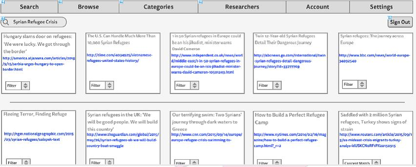
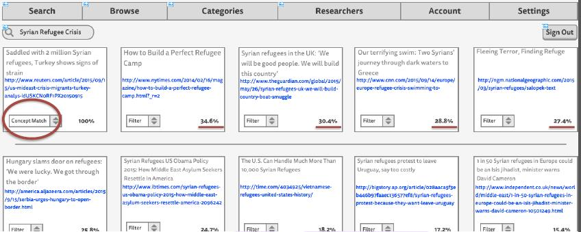
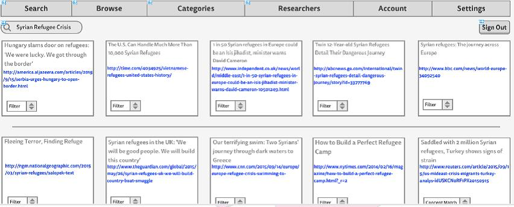
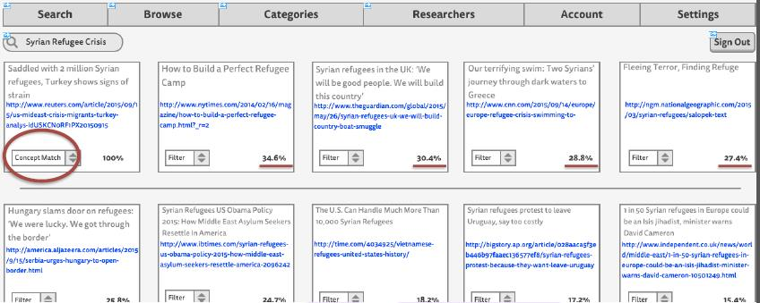

Phases: 1. Baseline Definition 2. Synonymization 3. Decomposition 4. Classification 5. Standardization
When we tackle the task of structuring language data, we focus on the balance between intelligently designed selective attention and autonomous machine learning. We ask of our clients: What do you want to extract from your text sources (news articles, research papers, blogs, legal documents, poetry, ...)? The benefit of Cortex's Semantic Data Mining over Syntactic Data Mining, another software approach, is that Semantic (meaning) classifications pervade in multiple domains - this means that the ambiguity of blogs, the plain english of legal documents, and the complexity of scientific articles do not limit Cortex's ability to derive meaning.
Cortex produces the results that you need in a standardized format so that you can move the data between the various ERP, E-Commerce, and Business Intelligence softwares that you use already.
With the dawn of the information age, so also came a mass contentment with search engines returning back "remembered" data. Bloom's Taxonomy classifies this data in the lowest order. Sensutec establishes knowledge engines that return to users both "remembered" data as well as a thick associative web of metadata that helps to fuel organic creativity.
Concept Match
Concept Matching allows the user to highlight as large of a section of text that they want and find the percentage of similarity between the concepts of interest and other articles in the web. For a more refined synthesis (presumably during research & development), the user may select a range of articles to Concept Match within. This cuts down reading time by hours and does not compromise meaning.
IMPORTANT: To summarize is to truly understand the Intent of the writer. We challenge any "Summary Engine" company to summarize Shakespearean poetry and hold their
head up in the midst of scholars.


Multi-Dimensional Semantics
We use algorithms to model the movement of thought and the movement of events through meaning space. This allows our clients to make predictions about how writers might write (blogs) and about how events might pass (news). This is the meat and potatoes of our decision making algorithms.